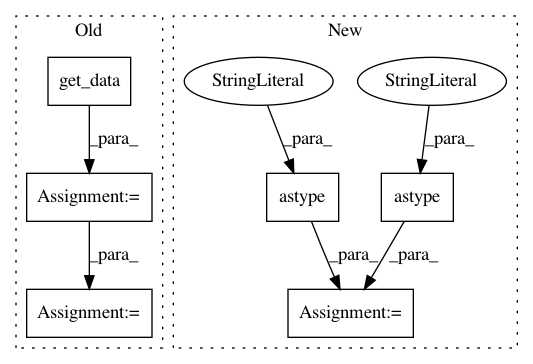

be41bb90371afcc733bdb0bfcf7c8982876fa723,tests/test_reg_utils.py,,test_check_orient_and_dims,#,243
Before Change
dmri_RAStoRAS, bvecs_RAStoRAS = reg_utils.check_orient_and_dims(dmri_LAS, "1mm", bvecs=bvecs_RAS)
anat_LAStoRAS = nib.load(anat_LAStoRAS)
anat_LAStoRAS_data = anat_LAStoRAS.get_data()
anat_RAStoRAS = nib.load(anat_RAStoRAS)
anat_RAStoRAS_data = anat_RAStoRAS.get_data()
dmri_LAStoRAS = nib.load(dmri_LAStoRAS)
dmri_LAStoRAS_data = dmri_LAStoRAS.get_data()
dmri_RAStoRAS = nib.load(dmri_RAStoRAS)
dmri_RAStoRAS_data = dmri_RAStoRAS.get_data()
// Assert that output arrays are identical.
anat_check = np.array_equal(anat_LAStoRAS_data, anat_RAStoRAS_data)
dmri_check = np.array_equal(dmri_LAStoRAS_data, dmri_RAStoRAS_data)
// Assert that voxel dimensions in ouputs are correct.
anat_LAStoRAS_dims = anat_LAStoRAS.header.get_zooms()
After Change
// Assert that output arrays are identical.
anat_check = np.allclose(anat_LAStoRAS.affine.astype("int"), anat_RAStoRAS.affine.astype("int"))
dmri_check = np.allclose(dmri_LAStoRAS.affine.astype("int"), dmri_RAStoRAS.affine.astype("int"))
// Assert that voxel dimensions in ouputs are correct.
anat_LAStoRAS_dims = anat_LAStoRAS.header.get_zooms()
anat_RAStoRAS_dims = anat_RAStoRAS.header.get_zooms()
In pattern: SUPERPATTERN
Frequency: 3
Non-data size: 6
Instances
Project Name: dPys/PyNets
Commit Name: be41bb90371afcc733bdb0bfcf7c8982876fa723
Time: 2019-08-26
Author: dpisner@utexas.edu
File Name: tests/test_reg_utils.py
Class Name:
Method Name: test_check_orient_and_dims
Project Name: dPys/PyNets
Commit Name: be41bb90371afcc733bdb0bfcf7c8982876fa723
Time: 2019-08-26
Author: dpisner@utexas.edu
File Name: tests/test_reg_utils.py
Class Name:
Method Name: test_reorient_img
Project Name: dPys/PyNets
Commit Name: 449ce796e6f506a28075f16099c986e298141569
Time: 2017-11-12
Author: dpisner@utexas.edu
File Name: pynets/nodemaker.py
Class Name:
Method Name: gen_network_parcels